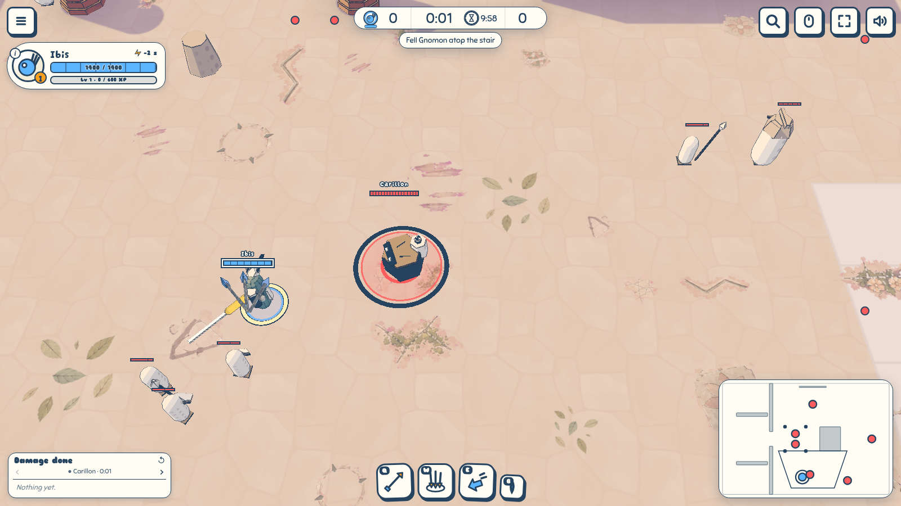
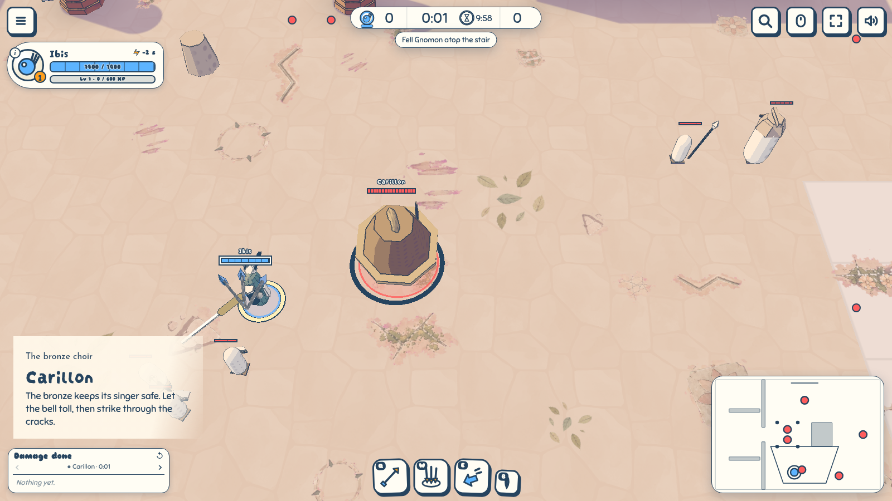
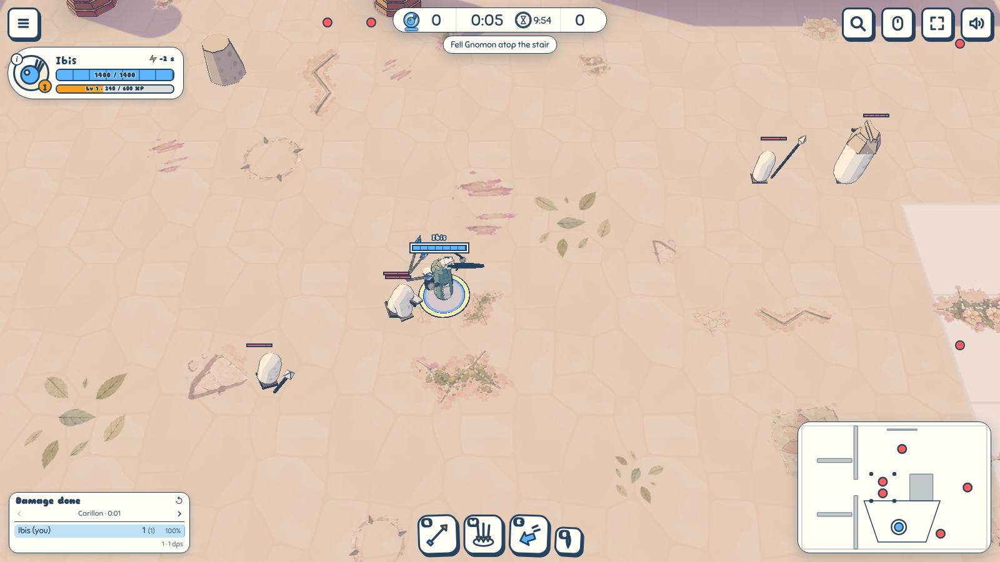
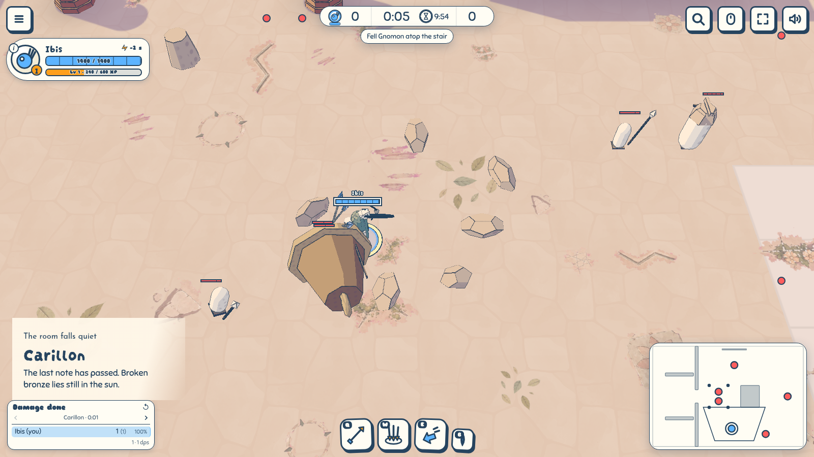
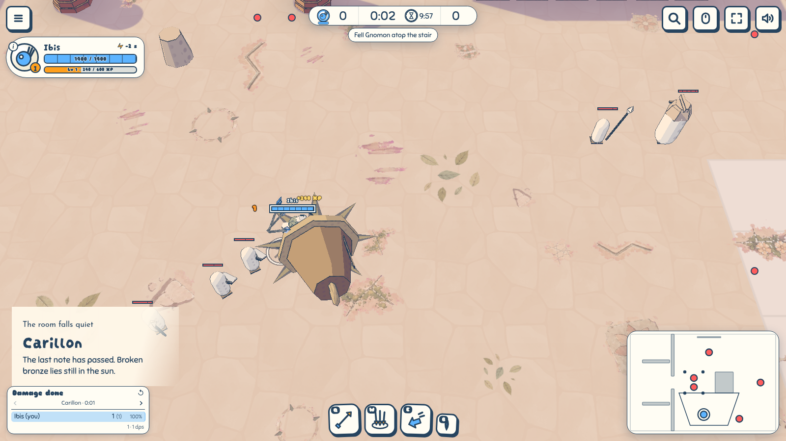

Wardens of Altamesa
To review · 2026-10-31 · thr_82amqx9zsz
Judge the arrival, the weight of the fall, and whether the quiet room reads as cleared.
Carillon before and after, at the match camera. The player walks into its reach and attacks through a real right-click. Its health is shortened to one for the kill; the fight still runs throughout the greeting. Frames advance at 60 ticks per second, with a render at every tick.
The arrival


The quiet room


The landing

The seven
Manos raises a clay hand and lowers it when the gate yields. Tinaja and Botijo greet the party as a broad jar and a narrow spouted jug; their pieces remain only while they are fallen. Fornax draws itself tight, then slumps into a cold kiln. Barquero takes up his pole and departs when Tara reaches the ferry.
Carillon sways in its bronze shell and falls upon its side. Espejo turns its silvered face, then lies broken as the polished hall loses its reflection. Gnomon rises over the dial and falls across it, leaving the hour marks broken and still. Each encounter shares the same presentation clock and carries its own name, title and briefing in its tune.
The checks
All four headless Altamesa runs cleared. The existing test suite passed: 271 tests, one skipped. The photo view and Carillon's pull and kill were checked in the browser. Warden arrival and fall facts passed through compact snapshots and the guest replica with dungeon packs excluded: Altamesa is currently offline, and its existing pack identifiers are not accepted by the lane transport.